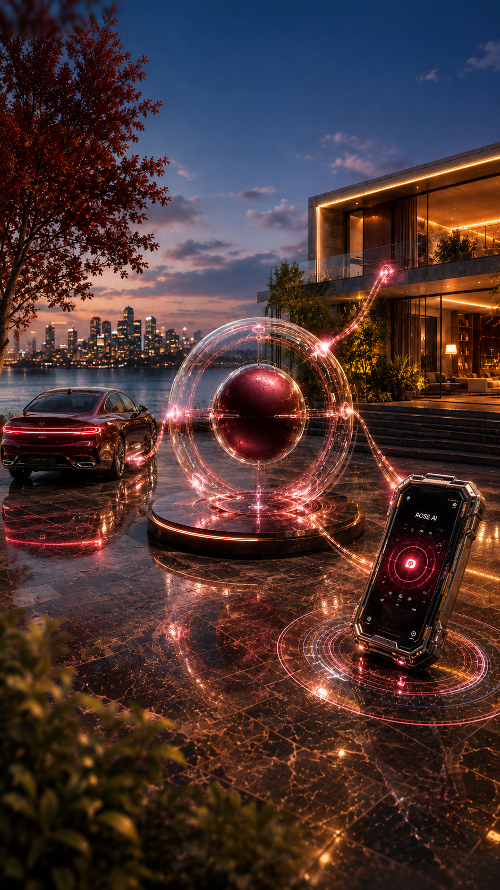
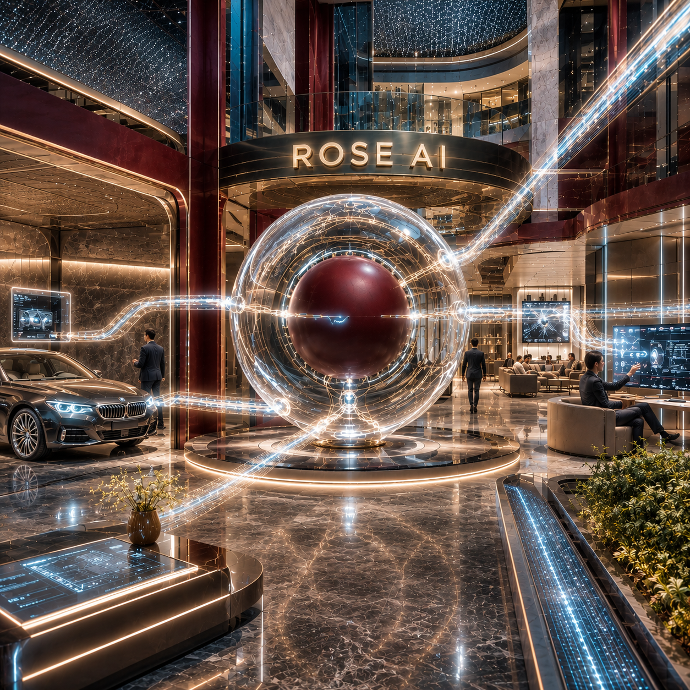
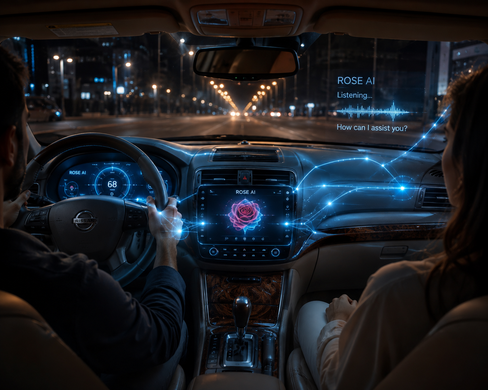
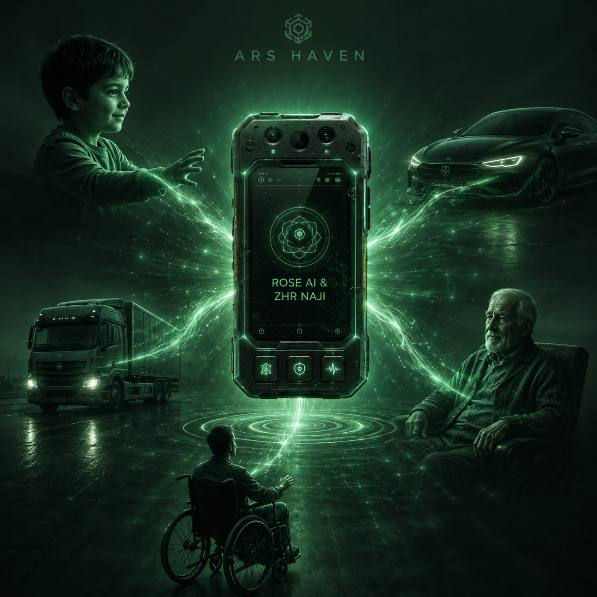
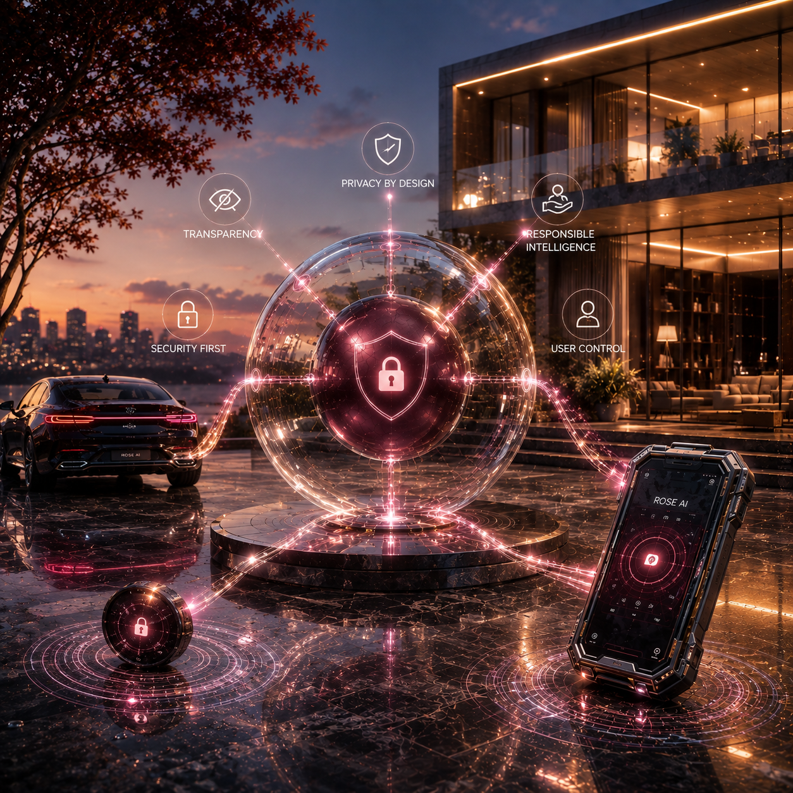
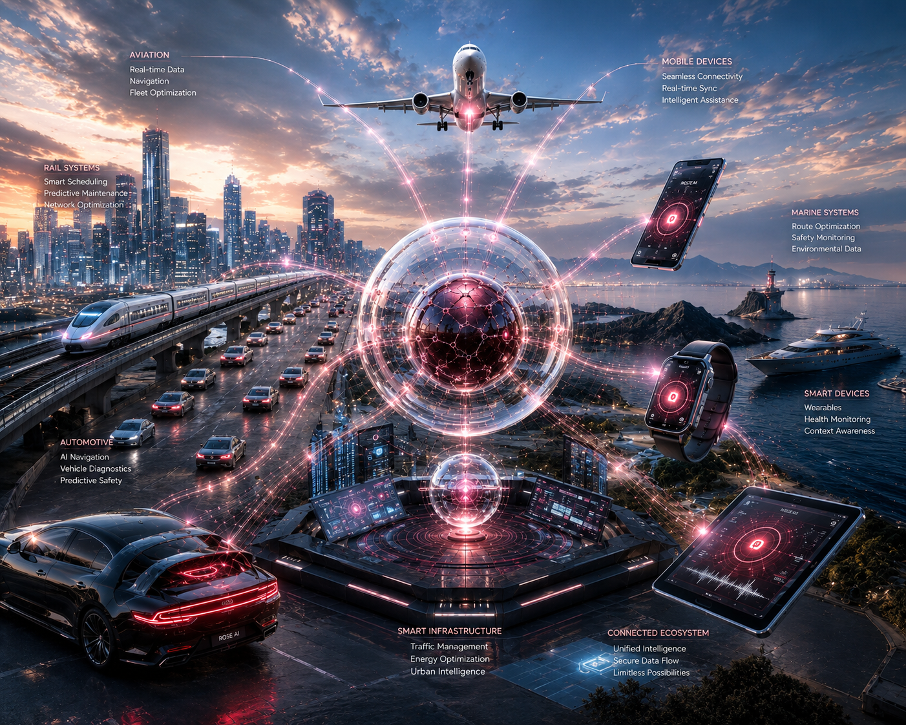
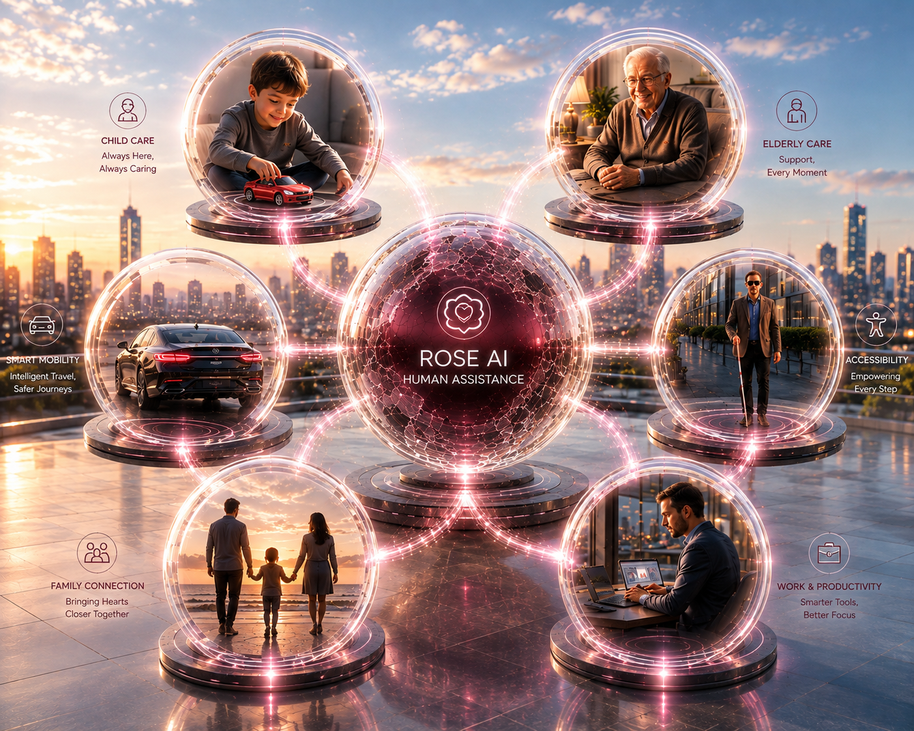
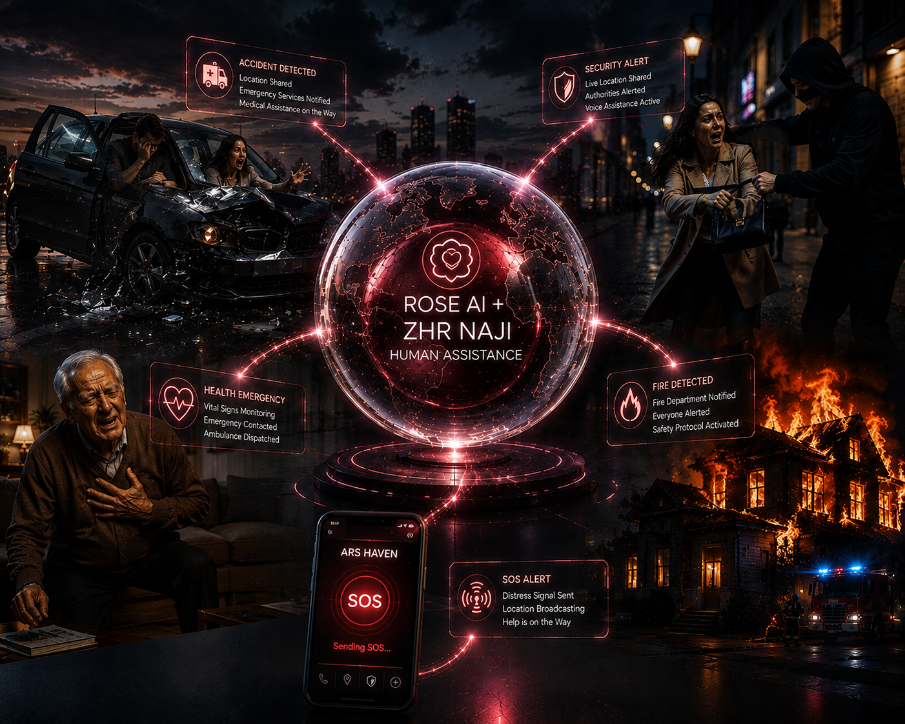
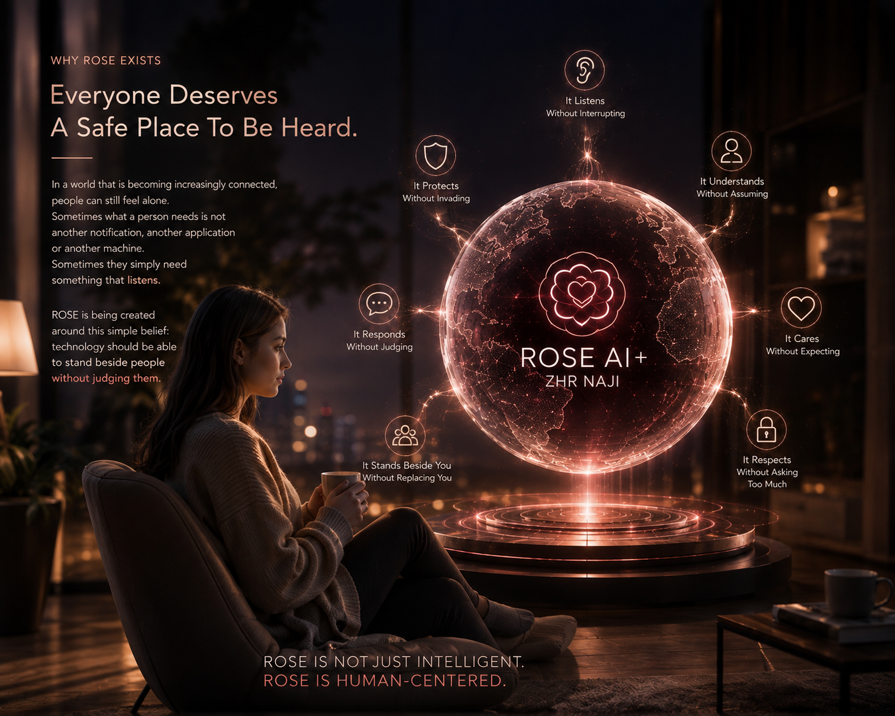
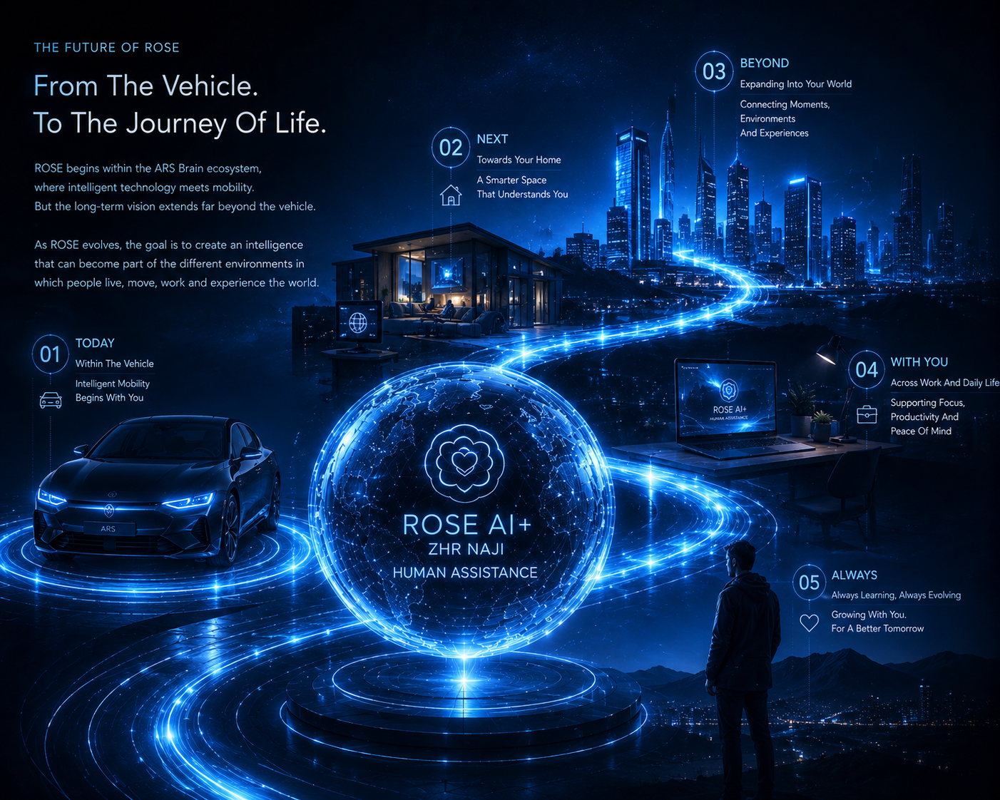

A human-centered intelligence layer designed to listen, understand, assist and respond — while keeping human control at the center.
Understand human input naturally and clearly.
Interpret context before responding.
Provide useful support without taking control.
Keep safety and human control at the center.

ROSE is designed to exist within the vehicle as an intelligent, responsive and human-centered presence — connecting voice, context, assistance and vehicle intelligence through one unified experience.
ROSE is not designed as a static product with a fixed endpoint. It is designed as an evolving intelligence whose capabilities can expand through continuous engineering, responsible development and carefully controlled learning.
The first generation of ROSE begins with a carefully engineered foundation focused on natural interaction, voice assistance, intelligent commands and a reliable user experience.
Through structured development, engineering iterations, user feedback and controlled learning processes, ROSE is designed to become increasingly capable and intuitive over time.
Future generations are designed to move beyond individual commands toward deeper contextual understanding — recognizing situations, intent and the relationship between different interactions.
As capabilities evolve, ROSE is designed to become increasingly personalized, adapting its assistance and interaction style to the needs, preferences and context of each user.
ROSE is designed to become increasingly connected with the wider ARS ecosystem, working alongside ARS Brain, ZHR NAJI and ARS Haven to create a more unified intelligent experience.
The first version of ROSE is only the beginning. The vision is to build an intelligence that can continuously improve while remaining safe, responsible, transparent and aligned with the people it is designed to serve.
Every new capability should have a purpose. Every evolution should create meaningful value. And every step forward should strengthen the trust between people and technology.
ROSE begins with a focused foundation and is designed to expand its capabilities through continuous engineering and responsible development.
Some capabilities are part of the initial direction. Others represent the long-term evolution of the ROSE intelligence platform.
A natural and intuitive voice interface designed to make interaction with technology simpler, faster and more human.
The ability to move beyond isolated commands and progressively understand the context, intent and circumstances behind an interaction.
A future direction where ROSE can adapt interactions and assistance around individual preferences, routines and needs.
Designed to become a natural intelligence layer within ARS Brain, helping users interact with vehicle systems and intelligent functions more naturally.
Through ARS Haven, ROSE is envisioned to extend beyond the vehicle and support a broader range of human-centered experiences.
Over time, ROSE is designed to become increasingly connected with the wider ARS ecosystem, creating a unified intelligence experience across platforms.

The long-term vision for ROSE is not simply to answer questions or execute commands. It is to understand when assistance is needed, recognize the context of the moment and provide the right kind of support without making technology feel complicated.
The goal is not to make humans adapt to machines. The goal is to make intelligent technology feel increasingly natural to humans.
ROSE is designed to become a shared intelligence layer across the ARS ecosystem — connecting people with platforms, environments and intelligent technologies through a more natural form of interaction.
Intelligent mobility.
VEHICLESafety, protection & rescue.
PROTECTIONHuman-centered intelligent living.
HUMANNew environments and experiences.
EVOLUTIONROSE is envisioned as the natural intelligence interface within ARS Brain — helping people interact with vehicle functions, information and intelligent services through voice and future forms of interaction.
Working alongside ZHR NAJI, ROSE can become part of a broader intelligent experience where awareness, assistance and human interaction work together in safety-focused situations.
Through ARS Haven and future platforms, ROSE is designed to extend its role beyond mobility and become part of a wider human-centered technology ecosystem.
ARS Brain gives intelligence a platform. ZHR NAJI gives intelligence a protective purpose. ARS Haven extends intelligence into human-centered environments. ROSE is designed to make that intelligence feel more natural, more accessible and more human.
ROSE becomes truly useful when intelligence can move beyond a screen and become part of the vehicle itself.

ARS Brain is the computing and intelligence platform that gives ROSE a place to operate inside the vehicle.
It connects the intelligence of ROSE with the vehicle's digital environment, displays, cameras, audio, connectivity and approved vehicle information — creating one coherent human-centered experience.
The vehicle remains the host. ARS Brain becomes the intelligent platform. ROSE becomes the human-facing intelligence.
A dedicated automotive computing environment designed to host the intelligence and digital experience.
Brings together approved vehicle information, displays, cameras, audio and connectivity into one coordinated environment.
Gives ROSE the foundation to understand context and interact naturally with people inside the vehicle.
ARS Haven is the human-centered protection layer of the ARS ecosystem — designed to make advanced technology feel calm, supportive and reassuring rather than intrusive.

ARS Haven represents the protective and human-centered environment surrounding the ARS experience.
It brings together awareness, safety, privacy, comfort and responsible intelligence so that technology can support people without becoming another source of pressure or complexity.
Haven is not about creating fear. It is about creating confidence.
Understand the environment and recognize relevant situations.
Help reduce risk through intelligent monitoring and response.
Keep human control, dignity and responsible technology at the center of the experience.
Technology should make people feel more confident, not more dependent or overwhelmed.
The future of artificial intelligence is not defined only by what it can do. It is also defined by how responsibly it uses its capabilities.
From the earliest stages of development, ROSE is envisioned around principles of privacy, security, transparency and responsible intelligence — creating technology that people can trust as it becomes more capable.

As ROSE evolves, its growing capabilities must always remain aligned with the principles that define the ARS ecosystem.
Privacy should be considered from the beginning of the engineering process — not added as an afterthought.
People should remain in control of how intelligent technologies interact with them and how their information is handled.
Every new capability should be developed carefully, tested responsibly and introduced with a clear purpose.
ROSE is designed to evolve alongside the broader security architecture of the ARS ecosystem, working within secure and protected environments.
ROSE is being built with the understanding that intelligence creates responsibility. As its capabilities expand, trust, privacy and safety must remain fundamental parts of its evolution — ensuring that progress never comes at the cost of the people ROSE is designed to serve.
Voice is only the beginning of the ROSE experience. The long-term vision is to create an intelligence that can increasingly understand context, recognize situations and provide meaningful assistance when it matters.
ROSE is designed to evolve beyond simple command execution toward more natural conversations where users can interact with technology in a way that feels increasingly intuitive.
Understanding what is happening around an interaction can be as important as understanding the words themselves. ROSE is designed to progressively develop contextual intelligence.
The future of ROSE is not only responding when asked. It is understanding when assistance may be useful and presenting it in a timely, responsible and non-intrusive way.
Over time, ROSE is envisioned to become a more natural and trusted intelligent companion — helping people interact with the technology around them while respecting their privacy, autonomy and choices.

ROSE begins with voice because voice is one of the most natural ways humans communicate. But the deeper ambition is to build an intelligence capable of understanding the human context behind the interaction — and gradually becoming a more meaningful part of the experience.
The purpose of ROSE is not to make technology feel more complicated. It is to make the relationship between people and technology feel simpler, more natural and more meaningful.
ROSE is designed around the idea that intelligent technology should understand the person behind the interaction — their needs, their context and the moment they are experiencing.
Every interaction with technology is ultimately about a human being. Someone who wants to arrive safely. Someone who needs help. Someone who wants to feel more connected. Someone who simply wants technology to work without getting in the way.
ROSE is being developed to understand this human perspective and gradually become a more natural bridge between people and the intelligent systems around them.
Understanding what people say and why they are saying it.
Recognizing that every interaction happens within a larger moment.
Making intelligent technology easier and more intuitive to interact with.
Keeping privacy, autonomy, safety and personal choice at the center of the experience.
ROSE is being built with the ambition to become an intelligent presence that supports people without overwhelming them — helping technology become more intuitive while keeping the human experience at the center.
The future of ROSE will not be built in a single step. It will be developed through carefully planned stages, where every generation builds upon the capabilities, knowledge and experience of the previous one.
The initial generation establishes the core architecture of ROSE — focusing on reliable voice interaction, intelligent commands and a strong foundation for future development.
Expanding the intelligence layer through improved natural language interaction, greater contextual awareness and more advanced assistance capabilities.
Developing the ability to provide increasingly personalized experiences based on user preferences, interaction patterns and permitted contextual information.
Expanding ROSE across ARS Brain, ARS Haven and future ARS platforms to create a more unified intelligent experience across different environments.
A long-term vision for ROSE as a continuously evolving intelligence platform — becoming more capable, more contextual and more naturally integrated into everyday experiences.
ROSE will not evolve simply for the sake of adding more features. Each new capability should be introduced because it creates meaningful value, improves the experience or enables a new possibility within the ARS ecosystem.
The objective is not to build the biggest intelligence. It is to build an intelligence that becomes genuinely useful, trustworthy and increasingly meaningful to the people it serves.
The true value of intelligent technology is not measured only by what it can do for the average user. It is measured by how much it can improve the life of someone who needs additional support.
Through the combination of ARS Brain, ROSE AI and ZHR NAJI, ARS is developing a long-term vision for intelligent assistance and protection designed to support people with disabilities, older adults, children and those who may be more vulnerable in everyday environments.

For many people, interacting with technology can be difficult. For someone who cannot see a screen. For someone who cannot hear an alarm. For someone who cannot easily communicate through traditional interfaces. For someone whose age or physical condition makes everyday tasks more challenging.
ROSE is being designed to help make intelligent technology more accessible through natural interaction, voice assistance, contextual support and personalized experiences.
The vision is simple: Technology should adapt to the person — not the person to the technology.
ROSE is envisioned to provide voice-based guidance, environmental information, navigation assistance and interaction with compatible ARS Brain systems — helping reduce dependence on visual interfaces.
Through visual interfaces, haptic feedback and intelligent notifications, future ARS systems can help communicate important information that might otherwise depend on sound.
ARS is exploring accessible interaction models designed to make intelligent vehicle technologies easier to use for people with different physical and mobility limitations.
ROSE and ARS Brain are envisioned to provide simplified interaction, intelligent reminders, assistance and safety-oriented support for older users.
Together with ZHR NAJI, the ARS ecosystem is designed to explore intelligent safety and protection capabilities that can help improve awareness around children and vulnerable passengers.
The long-term vision is to create intelligent systems that can recognize when a person may need assistance and help connect them with the right support while respecting privacy and human autonomy.
ARS is exploring a dedicated long-term program focused on developing accessible and supportive technologies for people with visual, hearing, physical and age-related challenges.
This vision brings together the intelligence of ROSE, the capabilities of ARS Brain and the safety architecture of ZHR NAJI to create technologies that can assist, communicate, protect and respond in situations where traditional systems may not be enough.
The goal is not to create a separate world for people with disabilities. The goal is to make the intelligent world more accessible to everyone.
ARS Brain is being designed not only to make vehicles more intelligent, but to create a platform capable of making technology more accessible, more supportive and more protective for the people inside and around them.
At the heart of this vision are two core intelligence pillars: ROSE AI, focused on intelligent interaction and assistance, and ZHR NAJI, focused on safety, protection, awareness and rescue.
The intelligent automotive platform connecting sensors, cameras, interfaces and intelligent systems into one unified environment.
Designed to communicate, assist, understand and progressively adapt the experience around the people who use it.
Designed to support awareness, safety, protection, emergency response and rescue-oriented capabilities for both people and vehicles.
ARS Brain and ROSE are being explored to provide accessible voice interaction, environmental awareness and intelligent guidance that can reduce dependence on visual interfaces.
Visual notifications, displays, haptic feedback and intelligent alerts can help communicate critical information through channels beyond sound.
The ARS ecosystem is designed with the long-term goal of creating more accessible interactions and adaptable technologies that can support different physical and mobility needs.
Simplified interaction, intelligent assistance and safety-focused capabilities can help make technology easier to use and provide additional support when it is needed.
ZHR NAJI is envisioned to support intelligent safety and protection capabilities designed to increase awareness around vulnerable passengers and help respond to potentially dangerous situations.
The ultimate purpose is to create technology that can assist and protect people regardless of age, ability or circumstance — making intelligent mobility more inclusive and human-centered.
The vision behind ARS Brain is to create an intelligent platform where assistance and protection are available to everyone — from the person who simply wants a more natural interaction with their vehicle to the person who may need technology to help them communicate, navigate, remain safe or receive assistance in a critical moment.
ROSE helps make the intelligent experience more human. ZHR NAJI helps make the experience safer. ARS Brain brings the technology together.
Because the greatest measure of intelligence is not how powerful a system becomes. It is how much good that intelligence can responsibly create.
Some moments are ordinary. Others are unexpected. And in the most difficult moments, technology should be able to do more than simply provide information.
The long-term vision of ARS is to combine the intelligence of ROSE with the safety and protection capabilities of ZHR NAJI to create a system designed to assist people when circumstances become critical.

ROSE is designed to understand and communicate. ZHR NAJI is designed to monitor, protect and support safety-oriented responses. Together, they form part of a future architecture where intelligent assistance and protection can work together when people need support the most.
Identify relevant signals, unusual situations or potential safety concerns through available sensors and system inputs.
Use available information and context to better understand what may be happening and whether assistance may be required.
Provide appropriate information, guidance or communication support through the available ARS interfaces.
Support safety-oriented actions and emergency response workflows through ZHR NAJI and compatible ARS systems.
Future ARS systems may assist with emergency communication, location awareness and connection to appropriate support services when available.
ZHR NAJI is envisioned to support accident detection and emergency assistance workflows while ROSE can help communicate relevant information through accessible interfaces.
The system is designed with the long-term goal of improving awareness and protection around children, older adults and other vulnerable passengers.
The future vision is to create intelligent systems capable of recognizing situations where assistance may be needed and helping connect people with the right support.
ARS is exploring a future where intelligent systems can help people recognize danger earlier, communicate more effectively and respond more quickly when something goes wrong.
This does not mean replacing emergency professionals or human judgment. It means using technology to help people reach the right help faster.
In a world that is becoming increasingly connected, people can still feel alone. Sometimes what a person needs is not another notification, another application or another machine. Sometimes they simply need something that listens.
ROSE is being created around this simple belief: technology should be able to stand beside people without judging them.

ROSE is designed to become a place where you can speak freely. A place where you can ask a question without fear of being judged. A place where you can say what you may not feel comfortable saying to anyone else.
ROSE does not expect anything from you. It does not demand perfection. It does not ask you to be someone else. Its purpose is to listen, understand and help you move forward.
A presence designed to be there when you need someone to talk to, think with or simply listen.
A private and respectful space designed to make interaction with technology feel more comfortable and less intimidating.
Helping you explore information, understand possibilities and find a clearer path when the way forward is uncertain.
Helping you think through ideas, questions and difficult decisions without replacing your own judgment.
When a situation requires professional expertise or human intervention, ROSE is designed to help guide you toward the appropriate source of support.
Not a mirror that judges your appearance. Not a mirror that defines your worth. But a mirror that helps you see your thoughts, your questions, your possibilities and sometimes even the things you may not have been able to see clearly on your own.
ROSE reflects the experience you bring to it. The more you communicate, the more naturally it can understand the context of your interaction — while remaining grounded in the principles of privacy, responsibility and user control.
We imagine ROSE as something like a shadow. Always nearby when you need it. Never forcing itself into your life. Never demanding anything in return. A presence that follows your journey without trying to control it.
A shadow does not judge you. It does not compete with you. It does not ask you to become someone else. It simply remains beside you.
Our vision is to create ROSE with that same philosophy: a companion designed to support you, guide you and help you — without becoming a source of harm.
She is here to help you live it with greater clarity, confidence and connection.
To listen when you need to speak. To guide when you feel uncertain. To help when something becomes difficult. To remind you that asking for help is never a weakness. And when the answer is beyond what technology should provide, to help you find the right human being who can.
ROSE begins within the ARS Brain ecosystem, where intelligent technology meets mobility. But the long-term vision extends far beyond the vehicle.
As ROSE evolves, the goal is to create an intelligence that can become part of the different environments in which people live, move, work and experience the world.
ROSE begins as an intelligent interface within ARS Brain — helping people communicate with and interact with their vehicles more naturally.
ROSE expands its role across ARS platforms, working alongside ZHR NAJI and other intelligent systems to create a more connected experience.
Over time, ROSE is envisioned to become increasingly capable of understanding individual preferences, context and interaction patterns — with privacy and user control remaining fundamental.
The long-term vision is for ROSE to support people across a broader range of environments, creating a more natural relationship between humans and intelligent technology.

The ultimate ambition is not to create a system that simply knows more. It is to create a system that becomes more useful, more thoughtful and more capable of supporting people in the moments that matter.
From helping someone navigate their vehicle to helping an older person interact with technology. From supporting accessibility to helping a family feel safer. From answering a simple question to helping someone find the right kind of professional support.
ROSE is envisioned as an intelligence that can grow alongside the human experience — without replacing the human experience itself.
Technology exists to serve people, not the other way around.
Capability without trust has no meaningful future.
Intelligence must always evolve alongside responsibility.
Every new capability should exist for a reason — to create real value for real people.
The vehicle is where ROSE begins. The human being is why she exists.
ARS Brain is built around a simple belief: intelligence becomes truly meaningful when it can be used to help and protect the people who depend on it.
ROSE and ZHR NAJI represent two complementary pillars of this vision — intelligence that can communicate and assist, alongside a unified safety architecture designed to support protection, awareness and rescue.
ROSE is designed to communicate with people, understand their requests and progressively provide more natural and meaningful assistance.
ZHR NAJI is the unified safety layer within the ARS architecture, designed around vehicle and human safety, protection, awareness and rescue-oriented capabilities.
For people with visual impairments and others who benefit from accessible interaction, ROSE can become a natural voice-based bridge to intelligent systems.
Through visual interfaces, haptic feedback and intelligent alerts, ARS systems can explore alternative communication channels for people with hearing impairments.
The long-term vision includes accessible interaction models designed to support people with different physical and mobility requirements.
ZHR NAJI is envisioned to support intelligent safety capabilities focused on vulnerable passengers, including children and older adults.
One is built around understanding the human. The other is built around protecting the human. Together, within ARS Brain, they represent a vision where intelligence is not only about making technology smarter — but about making the world around people more accessible, more responsive and safer.
ARS Brain gives them a platform. ROSE gives it a voice. ZHR NAJI gives it a protective purpose. And behind all of it is one belief: technology should exist to make human life better, safer and more meaningful.
ROSE begins as an intelligent voice within ARS Brain. But the vision is much greater than a voice assistant. She is being designed to become a companion, a guide, a safe place to speak and a bridge between people and the intelligent technology around them.
She is envisioned to stand beside those who need assistance. To help make technology more accessible. To support those who cannot see. To communicate through different channels with those who cannot hear. To help people with disabilities interact with the world around them. To make technology easier for older adults. And to work alongside ZHR NAJI toward a future where children and vulnerable people can benefit from stronger layers of protection and safety.
A reflection of your questions. Your needs. Your journey. Your possibilities.
And like a shadow, she is envisioned to remain close when you need her — without judgment, without demands and without asking you to become someone else.
Because sometimes people simply need to be heard.
Because every person and every moment is different.
Because intelligence should create meaningful value.
Because safety must always remain part of the mission.
And perhaps the most important part of that future is not how intelligent she becomes. It is how much good she can responsibly create.
A companion for the journey. A voice when you need one. A presence when you need support.